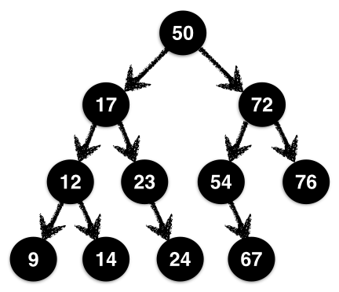
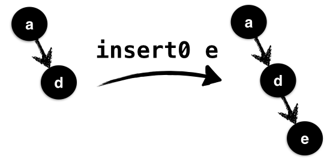
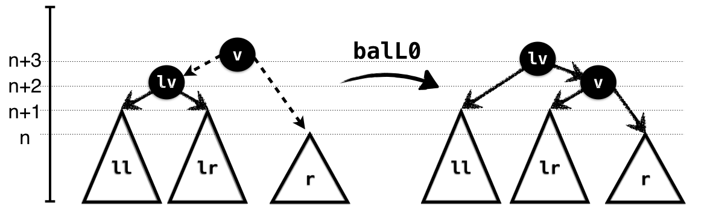
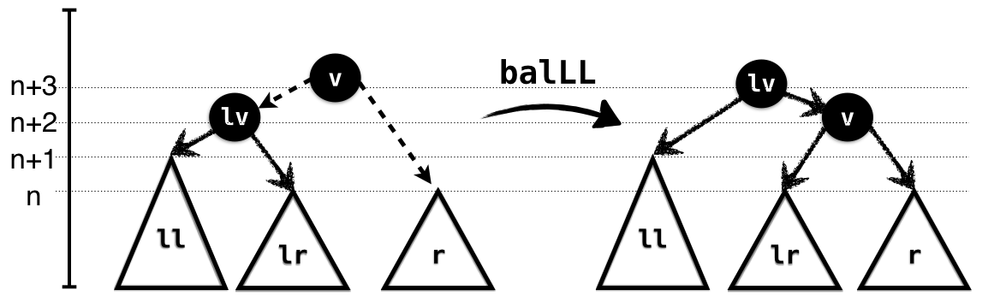
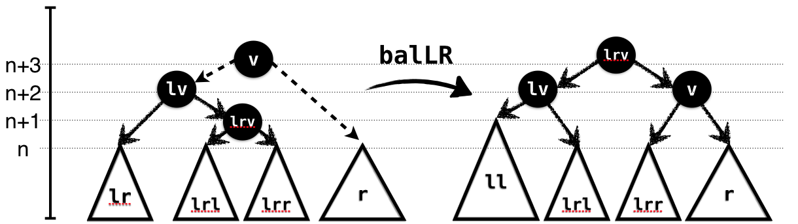

计算机程序中最基本的抽象之一，就是保存一组值的 集合：这些值可以是名字、数字或记录，我们希望能快速插入 insert、删除 delete，以及判断某个值是否属于集合 member。
在不可变数据结构中，树是实现集合的一种好选择。通过维持元素的 顺序，我们可以让每次操作只沿着从根到目标位置的一条路径进行；如果再让树保持 平衡，这条路径相对于整个集合就不会太长，于是操作也就高效了。
不过，像现实生活一样，维持秩序和平衡常常说起来容易、做起来难。为了让每个元素处在正确的位置，可能需要一系列精巧的调整。LiquidHaskell 可以帮我们检查这些调整。下面看一个数据结构课程里的熟悉例子：由 Adelson-Velsky 和 Landis 提出的 AVL 树。
译者说明： 本章前半部分重点证明二叉搜索顺序、平衡条件和缓存高度的一致性；最后才讨论集合语义。练习中的
undefined、FIXME和恒为True的谓词是上游保留的待完成内容，并非已经完成的证明。上游完整源码关闭了终止性检查，验证范围也需据此理解。
什么是 AVL 树#
先给出 Haskell 数据类型：
data AVL a =
Leaf
| Node { key :: a -- value
, l :: AVL a -- left subtree
, r :: AVL a -- right subtree
, ah :: Int -- height
}
deriving (Show)
原注：本章基于 Michael Beaumont 编写的代码。
普通 Haskell 类型描述的只是一般二叉树。但真正的 AVL 树，例如下面这棵树，还满足两个关键不变量：二叉搜索顺序 和 高度平衡。

二叉搜索顺序。 对每个 Node，左子树所有值都严格小于当前节点的值，右子树所有值都严格大于当前节点的值。图中根节点为 50，左子树的值位于 9–23，右子树的值位于 54–76。这不是只对根节点成立，而是对每个节点都成立。例如节点 12 的左、右孩子也分别小于和大于 12。
高度平衡。 对每个节点，左右子树的高度差至多为 1。图中根节点的两棵子树等高；节点 72 的左子树高度为 2，比右子树恰好多 1。
不变量为什么带来效率？ 顺序约束保证：要找某个值，最多只需沿一条由左转和右转组成的路径。平衡约束保证：这条路径长度为 O(log n)，其中 n 是节点数。因此，在各步操作成本受控的算法实现中，集合操作可以达到对数时间。
译者说明： 这里引用的是 AVL 算法的复杂度分析；本章精化规格本身并没有形式化证明运行时间。维护高度的方法也会影响实际成本：反复遍历子树重新计算高度，与直接读取已验证的缓存字段，代价不同。
为 AVL 树写规格#
难点是持续维持顺序和平衡。先别急着实现操作，要先告诉 LiquidHaskell：什么样的树才算合法。
描述顺序。 定义 AVLL 和 AVLR 两个别名，可以分别读成“AVL 左子树”和“AVL 右子树”，表示所有值都严格小于或严格大于给定值 X 的树：
-- | Trees with value less than X
{-@ type AVLL a X = AVL {v:a | v < X} @-}
-- | Trees with value greater than X
{-@ type AVLR a X = AVL {v:a | X < v} @-}
真实高度。 空树 Leaf 高度为 0；非空节点的高度，等于左右子树较大高度再加 1。不能直接把字段 ah 当作真相，因为它在普通 Haskell 类型里只是一个任意 Int，错误实现完全可能到处填 0。我们需要一个度量函数，真正按树结构计算高度：
{-@ measure realHeight @-}
realHeight :: AVL a -> Int
realHeight Leaf = 0
realHeight (Node _ l r _) = nodeHeight l r
{-@ inline nodeHeight @-}
nodeHeight l r = 1 + max hl hr
where
hl = realHeight l
hr = realHeight r
{-@ inline max @-}
max :: Int -> Int -> Int
max x y = if x > y then x else y
原注：
inline注解让这些 Haskell 函数可以被提升到精化逻辑中，并用于其他规格和度量函数。上游原注仍带有待编辑的FIXME标记。
检查高度是否真实。 谓词 isReal 要求给定值 v 恰好等于以 l、r 为子树的节点真实高度：
{-@ inline isReal @-}
isReal v l r = v == nodeHeight l r
描述允许的高度差。 如果左右子树的真实高度差不超过 n，就称它们满足 n 平衡。用谓词 isBal l r n 表达：
{-@ inline isBal @-}
isBal l r n = 0 - n <= d && d <= n
where
d = realHeight l - realHeight r
合法的 AVL 树。 现在可以写出精化数据类型：每个 Node 都要求左右子树满足 1 平衡，而且缓存的高度必须等于真实高度。
{-@ data AVL a = Leaf
| Node { key :: a
, l :: AVLL a key
, r :: {v:AVLR a key | isBal l v 1}
, ah :: {v:Nat | isReal v l r}
} @-}
智能构造函数#
先用这个类型构造几棵小树，它们也会成为集合 API 的基础。首先定义给定高度的树，以及与另一棵树等高的树：
-- | Trees of height N
{-@ type AVLN a N = {v: AVL a | realHeight v = N} @-}
-- | Trees of height equal to that of another T
{-@ type AVLT a T = AVLN a {realHeight T} @-}
空集合 用高度为 0 的 Leaf 表示：
{-@ empty :: AVLN a 0 @-}
empty = Leaf
练习：单元素树#
singleton 要把一个元素变成 AVL 树。修复下面的代码，让 LiquidHaskell 接受它：
{-@ singleton :: a -> AVLN a 1 @-}
singleton x = Node x empty empty 0
手动保持缓存高度 ah 与真实高度同步，很容易出错，也很繁琐。惰性队列里也遇到了同类问题。常见解决方法是：少直接使用原始数据构造函数，改用 智能构造函数，集中计算并填入正确字段。
原注：既然如此，为什么还要缓存高度，而不每次重新计算？请想想两种做法的成本。
智能构造函数。 它接收当前值、左右子树，再算出正确高度，构造结果。下面先给出待完善的 mkNode：
{-@ mkNode :: a -> l:AVL a -> r:AVL a
-> AVLN a {nodeHeight l r}
@-}
mkNode v l r = Node v l r h
where
h = 1 + max hl hr
hl = getHeight l
hr = getHeight r
练习：构造节点#
LiquidHaskell 会拒绝上面的智能构造函数。为什么？请修改实现或规格，让它通过验证。
提示： 看看真正的 Node 构造函数经过精化后的类型：它对左右子树有什么要求，又保证了什么？
译者说明： 原文说明文字在
node与mkNode之间交替命名。这里的练习函数实际叫mkNode；后续代码使用的node是完整源码另外提供的、规格已补全的辅助函数。两者不要当成两个无关算法。
插入元素#
接下来向 AVL 树加入元素。第一版的想法很直接：
- 根据搜索顺序，找到元素应插入的位置。
- 把那个位置的
Leaf换成单元素树。
如果用代码表达，就是下面这样：
{-@ insert0 :: (Ord a) => a -> AVL a -> AVL a @-}
insert0 y t@(Node x l r _)
| y < x = node x (insert0 y l) r
| x < y = node x l (insert0 y r)
| otherwise = t
insert0 y Leaf = singleton y
原注：这里使用的
node是已经修正的智能构造函数；前面的练习请先自己完成，不要直接查看它的答案。
遗憾的是，insert0 还不够正确。如果把你刚刚完善的 mkNode 用到这里，也会看到 LiquidHaskell 拒绝它：问题不在搜索顺序，而在构造节点时，左右子树可能不再满足平衡要求。
插入可能增加高度。 新元素进入某棵子树后，它可能相对兄弟子树变得太高。例如，考虑下面的 t0：
ghci> let t0 = Node { key = 'a'
, l = Leaf
, r = Node {key = 'd'
, l = Leaf
, r = Leaf
, ah = 1 }
, ah = 2}
用 insert0 插入排在 'd' 之后的 'e'，得到：
ghci> insert0 'e' t0
Node { key = 'a'
, l = Leaf
, r = Node { key = 'd'
, l = Leaf
, r = Node { key = 'e'
, l = Leaf
, r = Leaf
, ah = 1 }
, ah = 2 }
, ah = 3}

如图所示，'e' 进入 t0 的右子树。右子树原本高度为 1，插入后增至 2；而左子树仍为空，高度为 0，于是高度差过大。
译者说明： 原文这段文字提到了未在此定义的
insR0，实际展示的入口是insert0。图和示例要说明的都是“直接递归插入，可能破坏平衡”。
LiquidHaskell 会发现失衡。 insert0 递归返回的类型没有说明高度变化上界，所以检查器只能认为子树可能变高很多；它不能证明随后调用 node 满足平衡条件。更关键的是，这不只是规格不够精确：上面的实际例子已经表明，朴素插入确实会破坏平衡。
这里得到两点启发：
- 正确的插入算法应保证，树高度最多增加
1。 - 因此，需要一种重新平衡的方法，处理左右子树高度差达到
2的情况。
重新平衡#
Adelson-Velsky 和 Landis 的巧妙发现是：通过局部旋转，就可以重新安排节点，恢复平衡。先考虑往左子树 l 插入元素，得到新子树 l' 的情况；往右插入是对称的。
l' 与右子树 r 的相对高度有三种情况：
- RightBig：
r比l'高2。 - LeftBig：
l'比r高2。 - NoBig： 其余情况，即两者高度差不超过
1。
可以这样描述相关判断：
{-@ inline leftBig @-}
leftBig l r = diff l r == 2
{-@ inline rightBig @-}
rightBig l r = diff r l == 2
{-@ inline diff @-}
diff s t = getHeight s - getHeight t
getHeight 读取的是缓存高度字段：
{-@ measure getHeight @-}
getHeight Leaf = 0
getHeight (Node _ _ _ n) = n
对左侧插入 insL 而言，RightBig 不可能发生：l' 不会比原来的 l 更矮，而原来 l 与 r 的高度差已经不超过 1。
在 NoBig 情况下，可以直接通过智能构造函数连接 l' 与 r，因为它们已经平衡。真正麻烦的是 LeftBig：需要调整节点，让过高的左侧向右侧转移一部分结构。
进一步拆分 LeftBig。 l' 不可能为空，因为空树高度为 0，不会比另一棵树高 2。再根据 l' 自己左右子树的高度，分为：
- NoHeavy：
l'的左右子树等高。 - LeftHeavy：
l'的左子树更高。 - RightHeavy：
l'的右子树更高。
平衡因子 把这些情况表示成数值。虽然 getHeight 为效率读取缓存，但类型不变量保证它与 realHeight 一致：
{-@ measure balFac @-}
balFac Leaf = 0
balFac (Node _ l r _) = getHeight l - getHeight r
根据平衡因子的正负，就能判断哪边更重：
{-@ inline leftHeavy @-}
leftHeavy t = balFac t > 0
{-@ inline rightHeavy @-}
rightHeavy t = balFac t < 0
{-@ inline noHeavy @-}
noHeavy t = balFac t == 0
把情况分到这一步，所需的旋转方式就清楚了。

NoHeavy 情况。 如图所示，ll 与 lr 等高，并且都比 r 高 1。因此可以先把 lr 与 r 连起来，再与 ll 连接，以原左子树根节点作为新的根。
下面的前置条件精确描述当前情况：左子树属于 NoHeavy，并比右子树高 2。返回类型则说明旋转后的高度与输入子树有什么关系：
{-@ balL0 :: x:a
-> l:{AVLL a x | noHeavy l}
-> r:{AVLR a x | leftBig l r}
-> AVLN a {realHeight l + 1 }
@-}
balL0 v (Node lv ll lr _) r = node lv ll (node v lr r)

LeftHeavy 情况。 此时 ll 比 lr 更高，所以 lr 与 r 等高。同样可以先连接 lr、r，再与左侧连接。与上一种情况一样，输入类型描述旋转条件，输出类型描述结果高度：
{-@ balLL :: x:a
-> l:{AVLL a x | leftHeavy l}
-> r:{AVLR a x | leftBig l r}
-> AVLT a l
@-}
balLL v (Node lv ll lr _) r = node lv ll (node v lr r)

RightHeavy 情况。 此时 lr 比 ll 更高，不能简单地把整个 lr 与 r 连起来，否则仍然会太高。于是进一步把 lr 拆成 lrl、lrr，让 lrr 与 r 连接，同时把另一部分放到左边。这次的类型仍然准确表达了旋转的要求和保证：
{-@ balLR :: x:a
-> l:{AVLL a x | rightHeavy l}
-> r:{AVLR a x | leftBig l r}
-> AVLT a l
@-}
balLR v (Node lv ll (Node lrv lrl lrr _) _) r
= node lrv (node lv ll lrl) (node v lrr r)
如果是右侧更高，也就是 RightBig，处理方式与上面完全对称。
练习：RightBig、NoHeavy#
完成 balR0，使实现满足给定类型：
{-@ balR0 :: x:a
-> l: AVLL a x
-> r: {AVLR a x | rightBig l r && noHeavy r}
-> AVLN a {realHeight r + 1}
@-}
balR0 v l r = undefined
练习：RightBig、RightHeavy#
完成 balRR，使实现满足给定类型：
{-@ balRR :: x:a
-> l: AVLL a x
-> r:{AVLR a x | rightBig l r && rightHeavy r}
-> AVLT a r
@-}
balRR v l r = undefined
练习：RightBig、LeftHeavy#
完成 balRL，使实现满足给定类型：
{-@ balRL :: x:a
-> l: AVLL a x
-> r:{AVLR a x | rightBig l r && leftHeavy r}
-> AVLT a r
@-}
balRL v l r = undefined
正确插入。 现在可以先递归进入合适的子树插入元素，再判断当前属于哪一种情况，调用对应的旋转函数恢复不变量：
{-@ insert :: a -> s:AVL a -> {t: AVL a | eqOrUp s t} @-}
insert y Leaf = singleton y
insert y t@(Node x _ _ _)
| y < x = insL y t
| y > x = insR y t
| otherwise = t
eqOrUp s t 表示输出树 t 与输入树 s 等高，或者恰好高 1：
{-@ inline eqOrUp @-}
eqOrUp s t = d == 0 || d == 1
where
d = diff t s
主要工作在 insL 与 insR 中完成。先看左侧插入：得到 l' 之后，判断应该选择哪一种旋转。
{-@ insL :: x:a
-> t:{AVL a | x < key t && 0 < realHeight t}
-> {v: AVL a | eqOrUp t v}
@-}
insL a (Node v l r _)
| isLeftBig && leftHeavy l' = balLL v l' r
| isLeftBig && rightHeavy l' = balLR v l' r
| isLeftBig = balL0 v l' r
| otherwise = node v l' r
where
isLeftBig = leftBig l' r
l' = insert a l
练习：右侧插入（★）#
insR 与 insL 对称。请补全它，检查自己是否已经掌握了这些情况：
{-@ insR :: x:a
-> t:{AVL a | key t < x && 0 < realHeight t }
-> {v: AVL a | eqOrUp t v}
@-}
insR = undefined
把重新平衡重构为独立操作#
下一步实现删除 delete。总体策略与插入相似：
- 先找到并删除元素，暂时不处理高度变化。
- 利用“删除使高度至多降低
1”这一性质。 - 用旋转修复高度降低造成的失衡。
不过，之前的 insert 设计让我们有点被动：真正插入元素的逻辑，与判断、执行旋转的逻辑混在一起了。leftBig、leftHeavy 等判断都写在 insL 中。虽然这样也正确，但删除时就必须重复这套分支判断。
更合适的办法是把重新平衡提取为独立函数，让插入和删除共同使用：
{-@ bal :: x:a
-> l:AVLL a x
-> r:{AVLR a x | isBal l r 2}
-> {t:AVL a | reBal l r t}
@-}
bal v l r
| isLeftBig && leftHeavy l = balLL v l r
| isLeftBig && rightHeavy l = balLR v l r
| isLeftBig = balL0 v l r
| isRightBig && leftHeavy r = balRL v l r
| isRightBig && rightHeavy r = balRR v l r
| isRightBig = balR0 v l r
| otherwise = node v l r
where
isLeftBig = leftBig l r
isRightBig = rightBig l r
bal 汇集了原来 insL、insR 中的条件判断和旋转调用。它接收根值 x，以及相对于 x 满足搜索顺序的左右子树。两棵子树高度差至多为 2：这是因为它们原本相差至多 1，然后其中一边发生了一次插入或删除。
结果是一棵合法 AVL 树，还满足 reBal l r t。这个谓词包含两部分：
bigHt： 输出t的高度，等于较高那棵输入子树的高度，或者比它高1。balHt： 如果输入两棵子树本来就平衡，高度差不超过1，那么输出高度必须恰好等于把两者直接连成一个节点时的高度。
{-@ inline reBal @-}
reBal l r t = bigHt l r t && balHt l r t
{-@ inline balHt @-}
balHt l r t = not (isBal l r 1) || isReal (realHeight t) l r
{-@ inline bigHt @-}
bigHt l r t = lBig && rBig
where
lBig = not (hl >= hr) || (eqOrUp l t)
rBig = (hl >= hr) || (eqOrUp r t)
hl = realHeight l
hr = realHeight r
这样，插入 就变得很简单：递归插入到合适子树，然后调用 bal 修复失衡。
{-@ insert' :: a -> s:AVL a -> {t: AVL a | eqOrUp s t} @-}
insert' a t@(Node v l r n)
| a < v = bal v (insert' a l) r
| a > v = bal v l (insert' a r)
| otherwise = t
insert' a Leaf = singleton a
删除元素#
现在可以按类似方式实现 delete。递归分支很简单：进入相应子树删除元素，再调用 bal 整理结果。注意规格要求，输出 t 的高度与输入 s 相同，或至多低 1：
{-@ delete :: a -> s:AVL a -> {t:AVL a | eqOrDn s t} @-}
delete y (Node x l r _)
| y < x = bal x (delete y l) r
| x < y = bal x l (delete y r)
| otherwise = merge x l r
delete _ Leaf = Leaf
{-@ inline eqOrDn @-}
eqOrDn s t = eqOrUp t s
真正找到目标时 稍微复杂些：删除当前根值 x 后，调用 merge 合并左右子树 l、r。当左右都非空时，从右子树中拿出最小元素，作为替代的新根。
{-@ merge :: x:a -> l:AVLL a x -> r:{AVLR a x | isBal l r 1}
-> {t:AVL a | bigHt l r t}
@-}
merge _ Leaf r = r
merge _ l Leaf = l
merge x l r = bal y l r'
where
(y, r') = getMin r
getMin 递归寻找最左边的节点，也就是最小值，并同时返回移除该节点之后的剩余树。递归返回的左子树 l' 可能比原来的 l 矮 1，所以与右子树 r 重新连接时，还要调用 bal 恢复平衡。
getMin (Node x Leaf r _) = (x, r)
getMin (Node x l r _) = (x', bal x l' r)
where
(x', l') = getMin l
功能正确性#
前面已经实现了一套不太容易写对的树操作。有 LiquidHaskell 检查作为帮助，我们可以验证旋转是否保持搜索顺序、平衡条件和高度关系。这些不变量对正确性和效率都很重要。
不过，到目前为止，类型还没有完整描述 功能正确性：这些操作是否真的实现了集合 API？例如，插入之后是否保留全部旧元素，并增加目标元素；删除之后是否恰好移除了目标元素？我们需要像映射一章那样，明确说明这些语义。
具体分三步：
- 定义树包含的元素集合。
- 用类型说明每个操作应当怎样改变这个集合。
- 验证实现，必要时添加幽灵引理。
前面已经做过一次类似工作，这里很适合用来巩固理解。
元素集合。 用下面的度量函数，描述 AVL 树包含的元素：
{-@ measure elems @-}
elems :: (Ord a) => AVL a -> S.Set a
elems (Node x l r _) = (S.singleton x) `S.union`
(elems l) `S.union`
(elems r)
elems Leaf = S.empty
接下来用这个度量函数，为 AVL 库补上真正的集合语义。
练习：成员查询#
完成 member，检查元素是否在 AVL 树中：
-- FIXME https://github.com/ucsd-progsys/liquidhaskell/issues/332
{-@ member :: (Ord a) => x:a -> t:AVL a -> {v: Bool | v <=> hasElem x t} @-}
member x t = undefined
{-@ type BoolP P = {v:Bool | v <=> P} @-}
{-@ inline hasElem @-}
hasElem x t = True
-- FIXME hasElem x t = S.member x (elems t)
译者说明： 上游不仅把
member留为undefined，还暂时把hasElem写成了恒为True，真正的集合成员关系放在FIXME注释里。因此，照着当前占位谓词证明，只能得到一个没有表达目标语义的结果。完成练习时，需要一起补全有实际含义的规格，并处理原文标注的工具版本问题。
练习：插入后的集合#
在 insert' 的基础上得到 insertAPI，明确要求结果包含所有旧元素及新插入的元素：
{-@ insertAPI :: (Ord a) => a -> s:AVL a -> {t:AVL a | addElem x s t} @-}
insertAPI x s = insert' x s
{-@ inline addElem @-}
addElem :: Ord a => a -> AVL a -> AVL a -> Bool
addElem x s t = True
-- FIXME addElem x s t = (elems t) == (elems s) `S.union` (S.singleton x)
练习：删除后的集合#
在 delete 的基础上得到 deleteAPI，明确要求结果包含所有旧元素，但不包含被删除的元素：
{-@ deleteAPI :: (Ord a) => a -> s:AVL a -> {t: AVL a | delElem x s t} @-}
deleteAPI x s = delete x s
{-@ inline delElem @-}
delElem :: Ord a => a -> AVL a -> AVL a -> Bool
delElem x s t = True
-- FIXME delElem x s t = (elems t) == (elems s) `S.difference` (S.singleton x)
译者说明： 上游这里的
addElem、delElem也都暂时返回True，注释才表达预期的集合等式；这不构成集合语义的证明。此外，两个展示签名的第一个参数只写成a，后置条件却引用x，完整修复时需要显式绑定这个参数，例如x:a。这里保留原代码，便于与上游核对，不能把这些占位规格当作已经完成的验收结果。